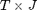
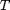
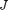
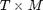
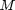
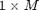

optimal_bandwidth
Estimates the optimal bandwidth for nonparametric rolling least-squares estimators
Contents
Syntax
hAlpha = optimal_bandwidth(Y,X)
[hAlpha hBeta] = optimal_bandwidth(Y,X)
[hAlpha hBeta hLongRunAlpha] = optimal_bandwidth(Y,X)
[hAlpha hBeta hLongRunAlpha hLongRunBeta] = optimal_bandwidth(Y,X)
[...] = optimal_bandwidth(Y,X,kernel)Description
hAlpha = optimal_bandwidth(Y,X) gives the optimal bandwidth for the nonparametric rolling least-squares estimators of regression intercepts. X is a  matrix of  observations of  independent variables. Y is a  matrix of observations of  dependent variables. hAlpha is a  matrix of bandwidths. Note: X should not include a column of ones.
[hAlpha hBeta] = optimal_bandwidth(Y,X) also returns the a matrix of optimal bandwidth for the slope coefficients.
[hAlpha hBeta hLongRunAlpha] = optimal_bandwidth(Y,X) also returns the a matrix of optimal bandwidth for the long run (time-integrated) intercepts
[hAlpha hBeta hLongRunAlpha hLongRunBeta] = optimal_bandwidth(Y,X) also returns the a matrix of optimal bandwidth for the long run (time-integrated) slope coefficients
[...] = optimal_bandwidth(Y,X,kernel) specifies the kernel. If not specified, the default is 'gaussian'. Other options are 'one-sided-uniform', 'one-sided exponential' or a used-supplied function handle (the kernel must integrate to one).
References:
[1] Ang, A. and Kristensen, D. (2011) Testing Conditional Factor
ModelsCopyright 2011 Fernando M. Duarte